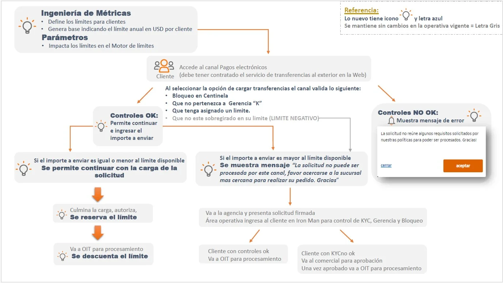
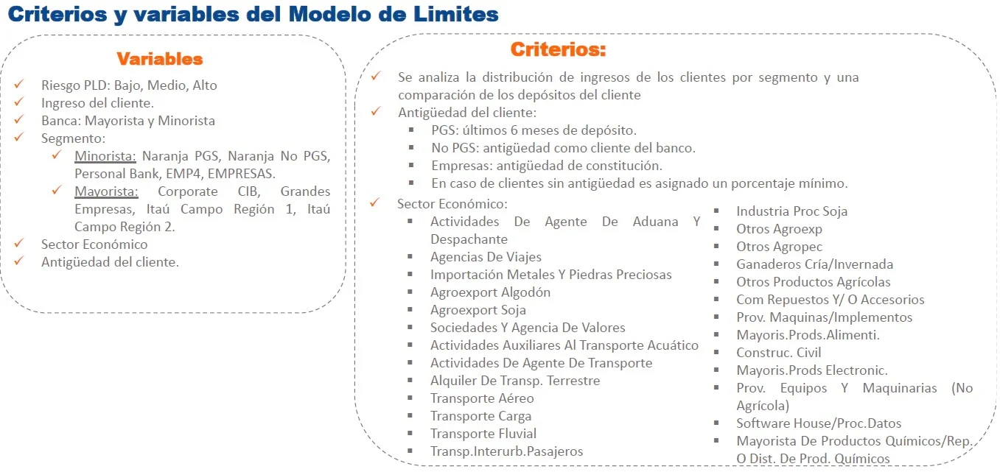
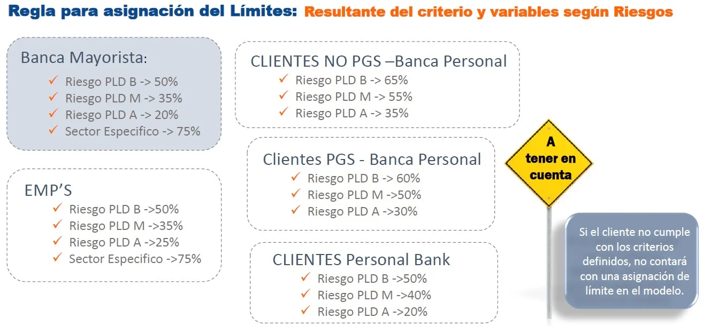
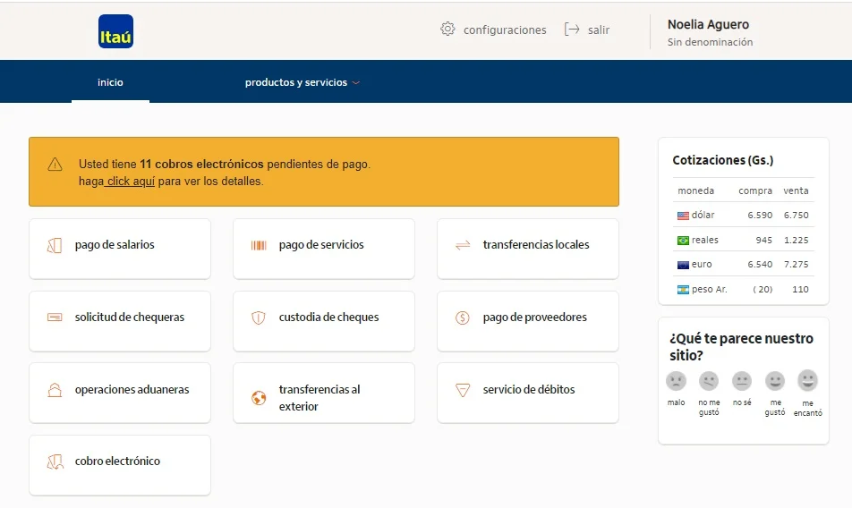
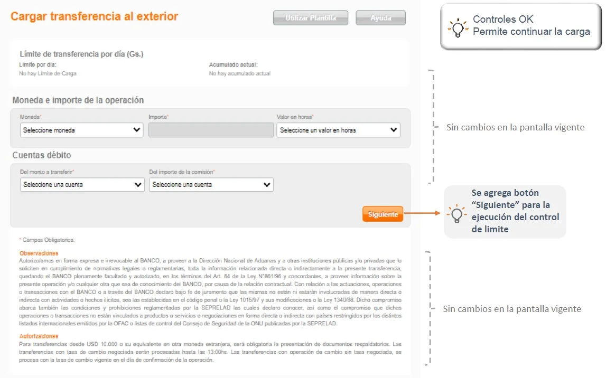
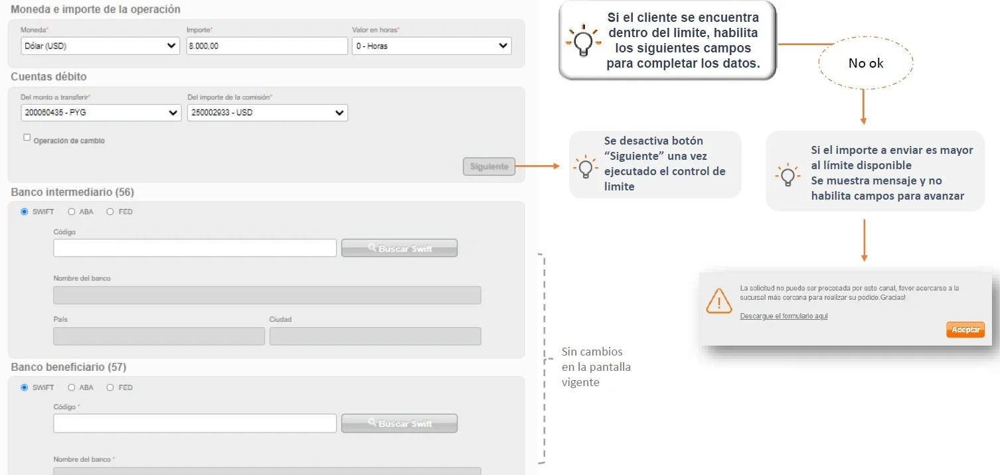
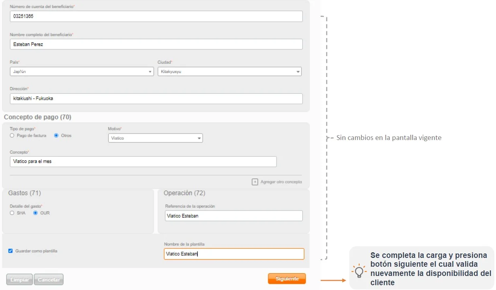
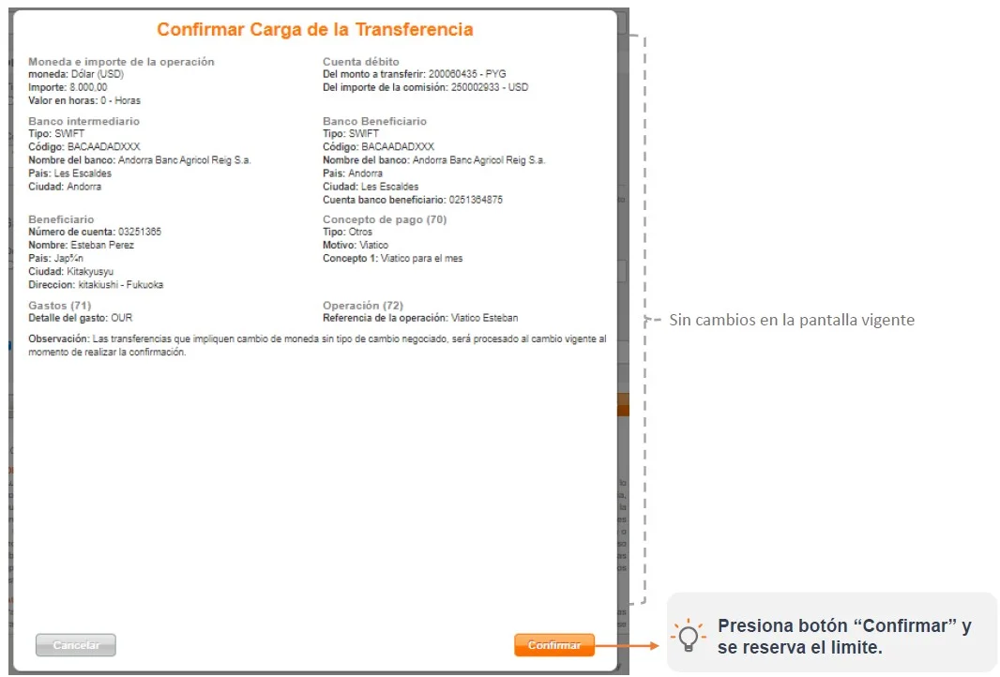

Ahora se habilita el canal digital para más clientes PJ mediante un límite operativo anual. Si la transferencia está dentro del límite asignado, se puede operar online, incluso sin KYC vigente. Si supera el límite, deberá gestionarse en sucursal con formulario físico.

Los límites se asignan según ingreso, segmento, antigüedad, sector económico y riesgo PLD. Son internos y anuales, pudiendo ajustarse trimestralmente por comité.
Segmentos como Pymes, EMP, GGEE, CIB y Personal Bank tienen reglas porcentuales según riesgo y sector económico específico.
| Situación | Límite operativo para transferencias al exterior Nuevo |
Límite de fraudes para canales digitales sin cambios |
Límite del administrador sin cambios |
|---|---|---|---|
| Importe | Personalizado y distinto para cliente |
Es por segmento en dólares: Campo: 1.400.000 y 7.000.000 CIB: 6.000.000 y 30.000.000 GGEE: 3.000.000 y 20.000.000 Empresas: 1.000.000 y 5.000.000 Pypes: 150.000 y 500.000 |
Definido por el cliente con su acceso administrador para asignación de operadores p/ carga y autorización |
| Validez | Anual | Diario y mensual | Diaria |
| ¿Qué mensaje de error aparece si no tiene límite? | La solicitud no reúne algunos requisitos solicitados por nuestras políticas para poder ser procesados. ¡Gracias! | ||
| ¿Qué mensaje de error aparece al exceder el límite? |
⚠️ La solicitud no puede ser procesada por este canal, favor acercarse a la sucursal más cercana para realizar su pedido. ¡Gracias! Descargue el formulario aquí |
||
| ¿Qué alternativas tiene el cliente si se excede? | Presentar su solicitud en una agencia con formulario (solución rápida). Es para clientes que no realizan frecuentemente transferencias al exterior | ||


Ocurre cuando: PJ que quiera tener el servicio pero que no tenga habilitado : porque no tiene límite o no cumple control IROMAN=no cumple centinela, cliente gerencia K.
Speech:Ocurre cuando: PJ que suele realizar transferencias en la web y tiene límite disponible solo que el importe que quiere enviar supera su límite o llego al 100 % de su limite;
Speech:
Controles operativos que bloquean el flujo digital:




Este nuevo modelo habilita a más clientes PJ a operar por canal digital, optimizando la experiencia y agilizando procesos. El límite operativo anual es clave para determinar la ruta de autorización, y el sistema guía al usuario según su situación.
Si el proceso no puede ser completado digitalmente, siempre está disponible la opción presencial en agencias, con formularios y documentación correspondiente.
Es un conjunto de reglas de negocio que establece el monto límite en moneda dólares asignado a un cliente para poder realizar Transferencias al Exterior.
El modelo de asignación de límites es dinámico, esto significa que sus criterios pueden ir evolucionando en el tiempo. En esta primera etapa está basado principalmente en los ingresos presentados por el cliente, segmentos, sector económico, riesgo y antigüedad del cliente.
No, esta información es interna.
Sí, con aprobación de un comité que se reunirá de forma trimestral.
En esta primera etapa no, las transferencias ingresadas en agencias van por flujo vigente de control de KYC en Iron Man. Se está preparando una siguiente entrega en la que el área operativa cargará las solicitudes recibidas en BPM y el BPM hará el control de límites y tracking de la solicitud.
Este límite es anual.
Sí puede, hasta las 13:30hs.
Presentar la solicitud física firmada en el canal agencias.
No existe horario de corte para transferencias con operación de cambio. Solo las que tienen una tasa negociada con la mesa de dinero pueden autorizar hasta las 13:30.
Se mantiene sin cambios y convive con el nuevo límite operativo asignado, se controlan ambos.
No, se mantiene el vigente.
Estamos verificando la oportunidad para habilitarlos a todos con PGS Admin.
No. El LOA p/ TE recibidas: es un límite por operación que sirve para controlar la documentación. Si está dentro del LOA, se acredita la transferencia y tiene un plazo para presentar los documentos después. Si está fuera del LOA no se acredita hasta recibir los documentos respaldatorios.
LOA enviadas: es un límite anual y se impacta en base al resultado de la ejecución del modelo.
No se puede verificar el estatus, solo puede ver cuando se procesa o rechaza. Más adelante se tendrá el BPM para el flujo interno, no para los clientes.